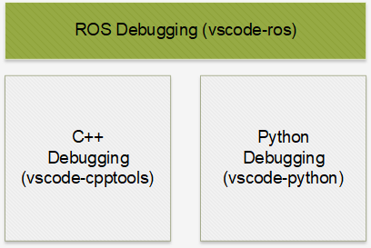
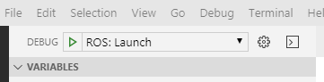
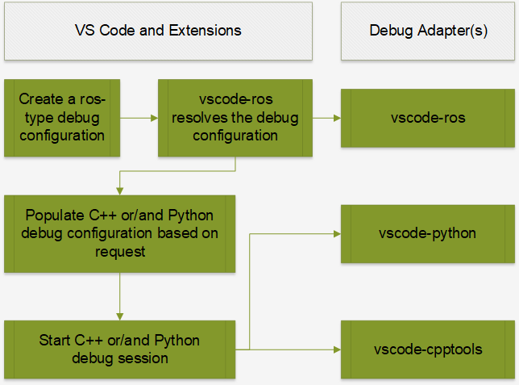
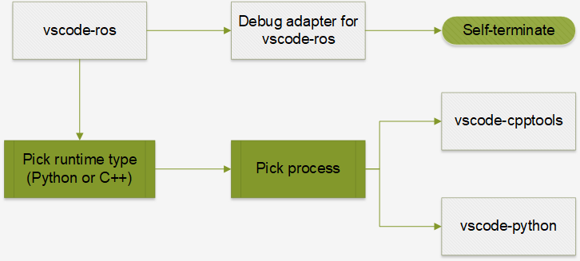
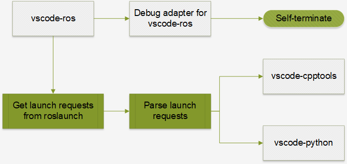

Debug ROS nodes with vscode-ros
Debugging is one of the most important and needed feature of a developer's toolkit when it comes to software development.
To debug ROS nodes launched by roslaunch, ROS wiki suggests using the launch-prefix attribute defined in a .launch launch file with debugger commands like this:
launch-prefix |
usage |
|---|---|
gdb -ex run --args |
run node in gdb in the same xterm |
valgrind |
run node in valgrind |
Currently, this approach only provides limited debugger support to roscpp nodes.
Goals
- enable attaching into a local C++ or Python process launched through
roslaunchto debug that process - enable debugging C++ and Python nodes specified in a
.launchfile at entry
Non-goals
Language-specific debugging capabilities including:
- complicated debugging scenarios like debugging a remote process
We would want to utilize existing language-specific tools for C++ and Python:

Debugging in Visual Studio Code
Typically, to start a debugging sessions, a debug configuration should be created in launch.json first.
After that, the newly created configuration could be selected and executed by pressing the green arrow or the F5 key.

What happens afterwards gets handled by 2 processes:
- the running Visual Studio Code instance (this is the running context of all extensions)
- the debug adapter instance (for each language)
A debug configuration first gets resolved by a registered debug configuration provider in VS Code's context.
Afterwards, a debug request gets sent to the extension’s debug adapter, which actually handles the debugging process.
However, the debug adapter is a separate process from the VS Code process, so no vscode APIs could be called from there.
In our scenario, we need to do everything in the extension context to utilize the functionalities provided by other extensions. Ideally, the workflow should be as simple as possible:
- the user creates a
ros-type debug configuration - our extension resolves the configuration
- our extension generates debug configuration for C++ or/and Python extensions

As illustrated in the above flow chart, we would also need a stub debug adapter.
Attach
Our goal for attach-debug is to provide a way to debug a ROS node while not changing anything in an existing flow.
This means when the user executes a .launch file with roslaunch just like before, he/she could use vscode-ros to easily start an attach-debug session to debug a running ROS node process.
All attach-debug configurations are propagated to language-specific extensions.

Attach into a C++ process
Just like using Visual Studio or windbg, attaching into a running C++ process could be achieved with vscode-cpptools easily.
Our extension automatically chooses cppvsdbg for MSVC debugger when it's running on Windows, and cppdbg for gdb-based debugger otherwise.
Attach into a Python process
Our extension uses ptvsd to enable debugging Python scripts.
Generally, a Python script needs to be launched through the ptvsd module to be able to be debugged:
python -m ptvsd –host <host> --port <port> <script>
Once a script is launched like this, a Python attach session could be launched inside VS Code to attach to the ptvsd server running inside the process.
However, Python processes launched by ROS tools (rosrun and roslaunch) are usually launched natively.
To debug a Python process without a running ptvsd instance, a ptvsd instance needs to be injected into the process first with the --pid <pid> flag.
Therefore, for normal Python processes in ROS, the workflow would be:
- get the PID of the Python process (we reuse the
processPickermodule fromvscode-cpptools) - inject
ptvsdusing API exposed byvscode-python(this avoids potentialptvsdversion mismatch) - start a Python-attach debug session with
vscode-python
To avoid potential version mismatch between the ptvsd module used by the Python extension and the one to be injected into the Python process, we use the API exposed by vscode-python to ensure the same version across processes.
Example for attach
{
"configurations": [
{
"name": "ROS: Attach",
"type": "ros",
"request": "attach"
},
{
"name": "ROS: Attach to Python",
"type": "ros",
"request": "attach",
"runtime": "Python"
}
]
}
Note on attach-debug
Microsoft's VS Code extensions for C++ and Python provide flexible mechanisms of attaching into a C++ or Python process. This extension only aims to enable a basic and generic attach-debug flow. Please use language-specific extensions for any specific debugging requirements including:
- specifying
symbolSearchPathormiDebuggerPathfor C++ debugging - attaching to and debugging a remote process
Launch
Our goal for launch-debug is to mimic the experience of debugging a single program in VS Code.
When a .launch file is launched in debug mode, we want to launch all the ROS nodes defined in it in debug mode at the same time.
Similar to attach-debug, we want to utilize all the language-specific debugging functionalities provided by vscode-python and vscode-cpptools.

From another perspective, we aim to translate launch configurations in a .launch file into debug configurations for VS Code that will be executed all at the same time.
To do this, we use the command line functionality of roslaunch to extract launch requests from a .launch file:
- get parameters defined in the
.launchfile withroslaunch --dump-params <launch-file> - load parameters with
rosparam load - get the nodes defined in the
.launchfiles withroslaunch --nodes <launch-file> - get launch requests for each node with
roslaunch --args <node> <launch-file>
TODO
- [ ] #122 support language-specific configurations in debug configuration
Limitations
-
when using the
--argsflag to get launch requests from the.launchfile, environment configurations would be expressed as inline env-set commands:someenv=somevalue node arg:=valuewhich would require extra (reverse) parsing of the command line. This could be avoided if
roslaunchgets updated. -
with the current implementation, all nodes in a
.launchfile, instead of only some specified ones, will be launched in debug mode. Potentially, when too many debug sessions are launched at the same time, it would be painful to terminate them one by one. To work around this, use more than 1.launchfiles and use one of them specifically for a limited number of nodes that need to be debugged. -
currently, when attempting to start multiple Python-launch debug sessions at once, only 1 of them could be connected. For this reason, it is limited to have only 1 Python node in the launch file for now. This is related to issues #7269 and #6017 in
vscode-python.
Example for launch
{
"configurations": [
{
"name": "ROS: Launch",
"type": "ros",
"request": "launch",
"target": "C:\\ros\\project_ws\\src\\project\\launch\\sample.launch"
},
{
"name": "ROS: Launch",
"type": "ros",
"request": "launch",
"target": "C:\\ros\\project_ws\\src\\project\\launch\\sample.launch",
"stopOnEntry": true
}
]
}
ROS2 support
This extension currently does not support the launch tool for ROS2.
Support for ros2/launch will be added once the launcher becomes stabilized.
Appendix
Why no launch-prefix support for rospy
The ROS Wiki suggested launch-prefix attribute is only supported for roscpp nodes, and this is our take on why it is not for rospy too.
All roscpp nodes are compiled C++ binaries (executables), so a roscpp node called talker could be launched directly from the command line like this:
./talker
and launching it with a debugger is straightforward:
gdb -ex run --args ./talker
valgrind ./talker
At the same time, rospy nodes are Python scripts made executable (on Linux) by adding a shebang line, the actual executable is the Python interpreter:
./talker
# when talker.py has #!/usr/bin/python as the shebang line, the above line just means
/usr/bin/python ./talker
Typically, to debug a Python script, one would need to use either pdb or ptvsd:
python -m pdb ./talker.py
# ptvsd only starts a debugging server inside the process
python -m ptvsd --host localhost --port 5678 --wait ./talker.py
To have these as the final commands, everything before ./talker.py need to be part of the shebang line.
However, that would be a bad choice since generally the script would/should not be launched in debug mode.
For this reason, there is no place to insert launch-prefix flags for rospy nodes.
This is a good example why it is suggested to keep the .py filename extension, and create separate a separate console script.
Why is a stub debug adapter needed
As illustrated in the flow charts above, a stub debug adapter that self-terminates immediately is still needed by vscode-ros to handle debug requests.
These debug requests are generated from the ros-type debug configurations.
When debug configurations are executed, they are resolved into debug requests and then sent to corresponding debug adapters.
It would lead to errors generated in VS Code if no debug adapter is there to handle the debug requests.
What about adding a debug attribute to the node element in roslaunch
Potentially, it could be helpful if the user could add a debug=True attribute (just like launch-prefix) in the .launch file to debug specific node(s).
However, since this means changing XML specification for ROS launch files, it would require all launchers (including roslaunch) to understand and consume this flag.
This is not preferred since roslaunch does not support launching nodes in debug mode.
What about an updated roslaunch
Ideally, roslaunch could be updated to support a --debug flag.
When this flag is added, roslaunch will not start any of the ROS nodes, but instead print out the launch requests in an easy-to-parse format (e.g. JSON):
- parameters to be set for the launch request
- environment configurations for each node
- launch commands for each node